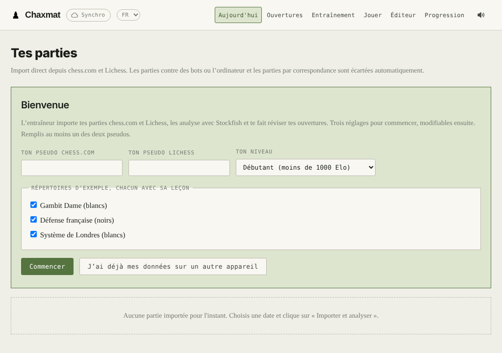
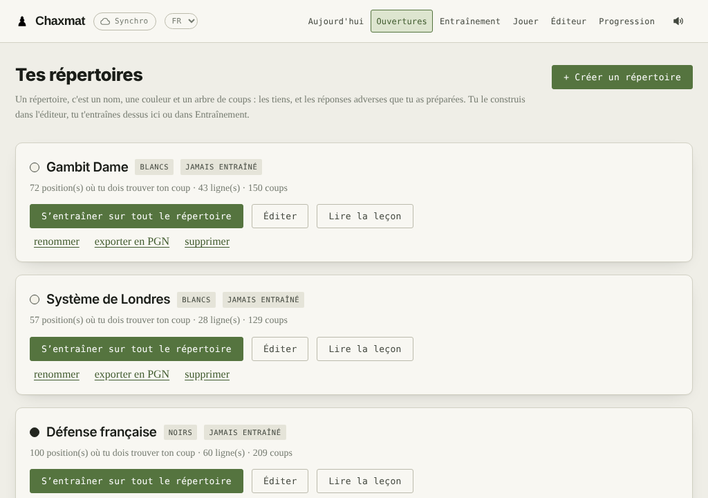
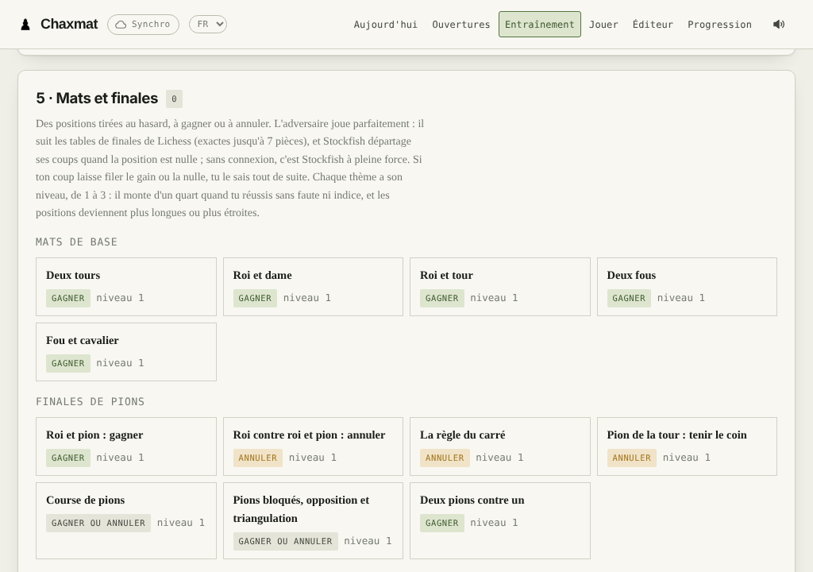

Tes parties analysées
Import de tes parties chess.com et Lichess, analyse Stockfish dans le navigateur. Chaque coup est expliqué en mots : la pièce laissée en prise, la fourchette ratée, le coup qu'il fallait jouer.
Entraîneur d'échecs libre et gratuit · ordinateur et Android
Chaxmat importe tes parties chess.com et Lichess, les analyse avec Stockfish et t'explique chaque coup. Il te fait réviser tes ouvertures, jouer contre un bot à ton niveau, et travailler les mats et les finales. Tout tourne chez toi : ni compte, ni abonnement, ni publicité.
Licence GPL v3 · en français et en anglais · mises à jour proposées au lancement

Six outils, qui partent tous de tes parties.
Import de tes parties chess.com et Lichess, analyse Stockfish dans le navigateur. Chaque coup est expliqué en mots : la pièce laissée en prise, la fourchette ratée, le coup qu'il fallait jouer.
Un éditeur de répertoire avec les coups joués sur Lichess, les tiens et ceux de Stockfish. Trois répertoires d'exemple avec leçon complète : Gambit Dame, Défense française, Système de Londres.
Écris ce que tu veux travailler, « la défense française » ou « les fourchettes ». Le bot fait autant de gaffes qu'un joueur de ton Elo, et te laisse des occasions tactiques à trouver.
Un petit réseau de neurones apprend sur tes parties comment tes adversaires choisissent leurs coups : ce qui les attire, ce qu'ils ratent, quand ils gaffent. Puis il joue comme eux.
35 thèmes, du mat roi et tour à la position de Lucena, tirés au hasard et à gagner ou à annuler contre le jeu parfait des tables de finales de Lichess, ou Stockfish hors connexion.
Rien ne part sur un serveur : tes parties restent sur ta machine. La synchronisation entre l'ordinateur et le téléphone passe, si tu le veux, par ton propre dépôt GitHub privé.


Gratuit, sans compte. Une nouvelle version est proposée au lancement de l'appli.
Il faut Python 3.7 ou plus récent, et un navigateur récent. Récupère l'application, avec git :
git clone https://github.com/AMAURYCU/chaxmat.gitou télécharge le ZIP « Source code » de la dernière version. Puis lance :
| macOS | double-clic sur entraineur/Ouvrir l'entraineur.command |
| Windows | double-clic sur entraineur/ouvrir-entraineur.bat |
| Linux | entraineur/ouvrir-entraineur.sh |